Albania
Visiting Albania...
|
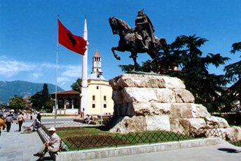 The statue of Skënderbeg, Albania's national hero, in Skënderbeg Square in Tiranë |
Albania, which Albanians call Shqipëria or Land of the Eagles, was once the most mysterious country in Europe. It became a Stalinist dictatorship in 1946, and was almost completely shut off from the rest of the world for decades. However, the Communist regime was overturned in 1991 and in spite of well-publicised troubles in 1992 & 1997, most of Albania is now safe to visit - you can check here.
COVID-19 update: Trains are running between the UK & continental Europe. Eurostar is running a reduced service. Beyond Paris & Brussels, train service is now normal.
From London to Tirane
-
Day 1, travel from London to Paris by Eurostar, leaving London St Pancras at 09:31 arriving Paris Nord at 12:47. Cross Paris by metro or taxi to the Gare de Lyon (2 stops on RER line D). Tip: On Mondays-Saturdays, have lunch at the remarkable Train Bleu restaurant inside the Gare de Lyon.
-
Day 1, travel from Paris to Milan by high-speed TGV, leaving Paris Gare de Lyon at 14:43 and arriving at Milan Porta Garibaldi at 21:49.
It's a relaxing and comfortable journey, passing directly from France into Italy via Modane and the Mont Cénis tunnel through the Alps. The TGV has 1st & 2nd class plus a cafe-bar serving drinks, snacks & tray-meals. What's the journey like? See the Paris-Milan TGV video guide.
-
Stay overnight in Milan. The AC Milano Hotel (a Marriott Lifestyle Hotel) is 350m from Milan Porta Garibaldi station and gets good reviews.
-
Day 2, travel from Milan to Bari by air-conditioned Frecciarossa train leaving Milan Porta Garibaldi at 10:13 and arriving Bari Centrale at 17:27.
There is a cafe-bar, or feel free to bring your own food & wine. The train follows the Adriatic coast for much of the way, past small towns and seaside resorts. In Bari, you can walk (25 minutes) or take a taxi to the ferry terminal, which is next to Bari's attractive old town. If you'd like to reach Bari earlier, there's an earlier 07:05 Intercity train from Milan Centrale (a short taxi ride or 25 minute walk from Milan Porta Garibaldi) arriving Bari Centrale at 17:05.
-
Day 2, sail from Bari to Durrës in Albania by overnight ferry, usually sailing around 22:00 and arriving around 07:00 or 08:00.
The easiest way to check ferry times & prices for all ferry operators on this route is at Direct Ferries, which checks all operators at once. Grandi Navi Veloce sail daily overnight departing Bari at 22:00 or 23:00 and arriving Durres at 08:00 (day 3 from London), Ventouris Ferries also sail daily overnight to similar timings. Adria ferries sail overnight too, also leaving at 22:00 or 23:00 and arriving at 08:00. Whichever operator you choose, a range of comfortable cabins is available on the overnight crossings.
-
Day 3, morning: See the timetable below for train service within Albania from Durrës.
From Tirane to London
-
Day 1, sail from Durrës to Bari by overnight ferry, usually sailing around 22:00 and arriving around 07:00 or 08:00.
The easiest way to check ferry times & prices for all ferry operators on this route is at www.directferries.co.uk, this checks all of them at once. Grandi Navi Veloce & Ventouris Ferries both sail daily leaving Durrës at 22:00 or 23:00 and arriving in Bari at 07:00 or 08:00 next morning, see www.gnv.it & www.ventouris.gr. You can also try Adria ferries (www.adriaferries.com) who also sail overnight. Whichever operator you choose, a range of comfortable cabins is available on the overnight crossings.
-
Day 2, travel from Bari to Milan by air-conditioned Frecciargento train leaving Bari Centrale at 10:30 and arriving in Milan Centrale at 17:55.
There is a refreshment trolley, or feel free to bring your own food and wine. In Milan, it's a 25 minute walk or 8-minute €8 taxi ride from Milan Centrale to Milan Porta Garibaldi.
-
Stay overnight in Milan, a beautiful city that's well worth an extra day for a stopover. The AC Milano Hotel (a Marriott Lifestyle Hotel) is 350m from Milan Porta Garibaldi and gets good reviews.
-
Day 3, travel from Milan to Paris by high-speed TGV, leaving Milan Porta Garibaldi at 06:00 and arriving Paris Gare de Lyon at 13:13.
There is a café-bar serving drinks, snacks & light meals, and it's a scenic journey through the Alps via the Mont Cénis tunnel, Modane and Chambéry. What's the journey like? See the Paris-Milan TGV video guide.
Cross Paris by metro or taxi to the Gare du Nord, 2 stops on RER line D.
-
Day 3, travel from Paris to London by Eurostar, leaving Paris Gare du Nord at 15:13 & arriving London St Pancras 16:30 (16:37 on Sundays).
How much does it cost?
- London to Paris by Eurostar starts at £52 one-way or £78 return in standard class, £115 one-way, £199 return standard premier (1st class).
- Paris to Milan by TGV starts at €29 each way in 2nd class, €44 each way in 1st class.
- Milan to Bari starts at €29.90 in 2nd class or €39.90 in 1st class, each way.
- All these fares are dynamic, meaning they vary like air fares depending how popular that date & train is, and how far ahead you book.
-
Bari to Durres by ferry: The cost varies by operator, season & type of seat/berth/cabin. For example:
€47 - €65 each way in a reclining seat, depending on season (Adria).
€51 each way with bed in outside 4-berth cabin (Ventouris Ferries).
€74 - €101 each way with a bed in a 2-berth outside cabin (Adria).
How to buy tickets...
-
Step 1, start by booking the ferry. You can easily check prices & sailing dates for all Italy-Albania ferry operators using the Direct Ferries website. The price you initially see is for a 'deck place', you can add a cabin at the next stage. When you book, you are emailed a confirmation which you present at check-in to exchange for your boarding pass.
-
Step 2, go to European train booking site www.raileurope.com . There's a small booking fee but all tickets can be booked easily in plain English all in one place. Anyone from any country worldwide can use raileurope.com as all international credit cards are accepted. Who are Raileurope.com?
Booking for Eurostar opens up to 180 days ahead, for the TGV & Italian trains usually up to 120 days ahead, although British domestic trains usually only open around 90 days ahead.
First book from 'London (any station)' to 'Milan (any station)', looking for the journey by Eurostar & TGV listed above which will be shown in the search results as having 1 change. Add this to your basket. It can help to read the detailed booking tips here. Raileurope.com can in fact book from any station in Britain, not just London.
Use the suggested Eurostar times on this page as a guide, but feel free to choose an earlier Eurostar from London southbound, or a later Eurostar returning from Paris northbound, if these have cheaper seats available or if you'd like to stop off in Paris. To stop off and perhaps have lunch in Paris, run a London to Milan enquiry after clicking 'More options', entering 'Paris' and setting a stopover of however many hours you want.
Second, book from Milan to Bari for the following day, add this to your basket and check out, paying for all your tickets as one transaction.
You'll get print-at-home tickets for the Eurostar & the TGV, the Trenitalia train is ticketless, you simply print out the booking reference or show it on your phone. Easy!
-
Alternatively, each train can also be booked at www.thetrainline.com, easily in plain English, in €, £ or $, also with print-your-own, show-on-smartphone tickets or ticketless. Who are Thetrainline.com?
-
Alternatively, you can book each train separately direct from the relevant operator with no booking fee, although this means more work and the fares will be the same. First book your London-Paris train at www.eurostar.com, and the Paris-Milan TGV at www.sncf-connect.com. Both sites give print-at-home tickets with no booking fee. You can then book the Milan to Bari train at the Italian Railways website www.trenitalia.com(requires Italian-language place names and has a few quirks, but no booking fee, see this advice on how to use it), looking for a cheap Economy or Super-Economy fare. You pay online and quote your reservation reference to the conductor on the train.
-
To book train tickets by phone, try Ffestiniog Travel or International Rail, see here for phone numbers & opening times.
What's the journey like?
1. London to Paris by Eurostar...
Eurostar trains link London & Paris in 2h20, travelling at up to 300 km/h (186 mph). There are two bar cars, power sockets at all seats and free WiFi. Standard Premier and Business Premier fares include a light meal with wine (or breakfast, on departures before 11:00). There's a 30-minute minimum check-in at London St Pancras (45-minute minimum in Paris, Brussels & Amsterdam) as all border formalities are carried out before you board the train. More information about Eurostar including check-in procedure. St Pancras station guide. Paris Gare du Nord station guide. How to cross Paris by metro or taxi.
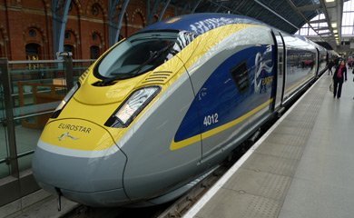
A Eurostar e320 at St Pancras. More about Eurostar.
{kind=link}
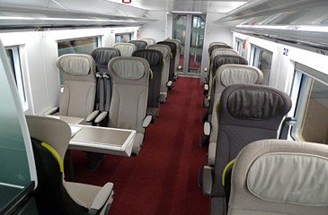
1st class: Standard Premier or Business Premier.
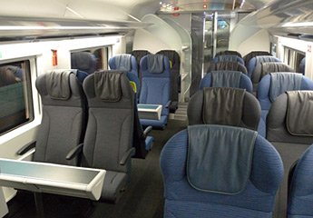
Standard class seats.
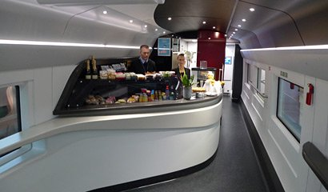
One of two cafe-bars, in cars 8 & 9.
Lunch in Paris at the Train Bleu restaurant?
The trains to Italy leave from the magnificent Gare de Lyon in central Paris. Why not have lunch (or at least a drink in the bar) at the fabulous Train Bleu Restaurant inside the Gare de Lyon (pictured above right) before catching the train to Turin or Milan? Paris Gare de Lyon station guide.
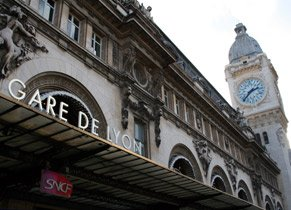
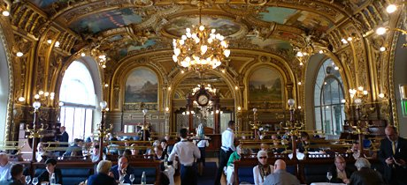
2. Paris to Milan by TGV...
SNCF (French Railways) operates three daily 186 mph TGV trains from Paris to Milan. Previously operated by Artesia, a consortium of Trenitalia & SNCF, they are now operated entirely by SNCF, officially via a new Italian subsidiary, Società Viaggiatori Italia. On leaving Paris they sprint over the high-speed line at up to 186 mph (300 km/h) as far as Lyon St Exupéry, but they then slow right down to meander through the scenic Alpine foothills on conventional lines via Chambéry, crossing into Italy at Modane and heading through Turin to Milan. These TGVs have 1st & 2nd class seats and are fully air-conditioned, with new interiors designed by Christian Lacroix. There are power sockets for laptops and mobiles at every seat and there are baby-changing facilities and designated spaces for passengers in wheelchairs. There's a cafe-bar serving drinks, snacks & light meals, or feel free to bring your own food & wine along for the journey. In first class you can order a 3-course meal with wine, served at your seat. You can now buy Paris metro tickets from the bar car, too. 1st class TGV passengers can use the Grand Voyageurs 1st class lounge at Paris Gare de Lyon. Incidentally, SNCF's experienced in-house designer still hasn't forgiven Christian Lacroix for breaking the unwritten rule and using warm colours in 2nd class, cooler colours in 1st class, so see what you think!
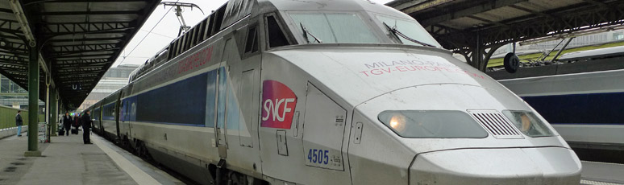
The afternoon TGV to Milan at Paris Gare de Lyon. There's no check-in, just be on board at departure time...
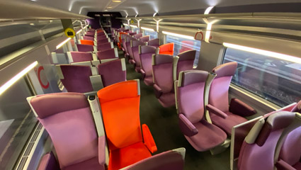
2nd class with mix of unidirectional seats & tables for 4. Seats 2+2 across car width. Larger photo.
{kind=link}
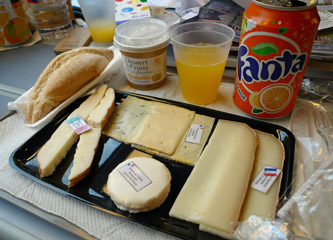
The cheese platter bought from the cafe-bar as the mountains swept by...
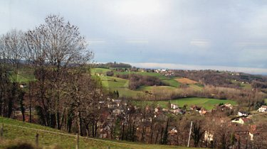
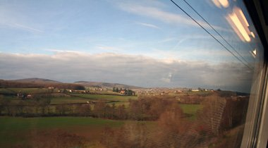
The TGV leaves Paris behind & speeds across rural France at up to 186 mph, past fields, woods, pretty villages...
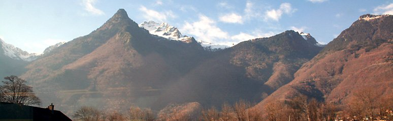
...it calls at Lyon St Exupery then slows right down through the Alpine foothills.
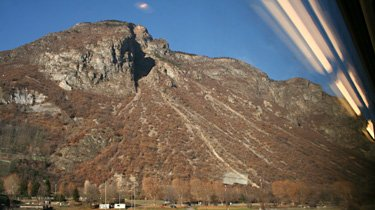
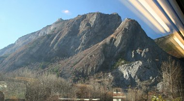